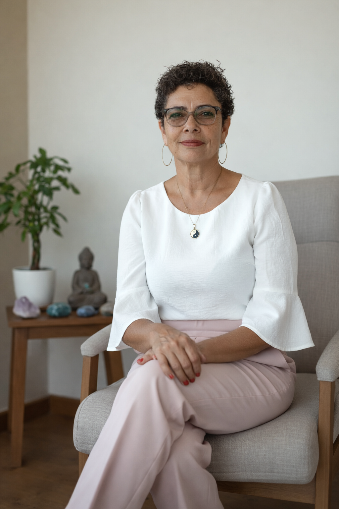

Sessões de Reiki, Barras de Access e terapias energéticas para reduzir estresse, ansiedade e cansaço emocional.
Agende sua sessãoMestre Reikiana e facilitadora de terapias energéticas, com anos de experiência em atendimentos. Trabalho é focada no equilíbrio energético e no apoio ao bem-estar emocional.
Escolha a terapia que mais ressoa com o seu momento atual.
Tem dias em que você sente que está carregando peso demais, como se sua mente não conseguisse desacelerar e o corpo pedisse uma pausa? O Reiki é um momento de cuidado e reconexão, ajudando a aliviar tensões emocionais, reduzir o estresse e trazer uma sensação profunda de relaxamento. É um espaço seguro para você simplesmente respirar, desacelerar e permitir que sua energia volte ao equilíbrio.
Saiba mais →Sabe quando sua mente não para, cheia de pensamentos, preocupações e coisas que você não consegue desligar? As Barras de Access ajudam a liberar bloqueios emocionais e padrões mentais acumulados, trazendo mais leveza, clareza e tranquilidade. Muitas pessoas saem da sessão com a sensação de que a mente ficou mais silenciosa e o corpo mais relaxado.
Saiba mais →Está sentindo que o cansaço aparece não só no corpo, mas também no rosto e na forma como você se sente? O Facelift Energético promove uma revitalização energética profunda, trazendo sensação de leveza, renovação e bem-estar. É um momento de cuidado que ajuda você a se sentir mais relaxado(a), renovado(a) e conectado(a) com sua própria energia.
Saiba mais →
Quem é Cicera? 🧘♀️
Sou terapeuta energética há 4 anos, dedicada ao cuidado emocional e ao equilíbrio interior. Com uma escuta acolhedora e sensibilidade natural para compreender as dores humanas, atuo ajudando pessoas a se reconectarem com sua própria energia e bem-estar. Meu trabalho é guiado pelo propósito de acolher, orientar e apoiar cada pessoa em seu processo de equilíbrio.
O começo como terapeuta 📖
Meu início como terapeuta aconteceu quando decidi buscar formas mais
profundas de ajudar pessoas próximas que enfrentavam desafios emocionais, especialmente ligados à
ansiedade.
Ao conhecer e vivenciar na prática os resultados das terapias energéticas, eu senti que esse era o
caminho que queria seguir e passei a me formar e me especializar na área.
A partir daí, começou a atender e transformar esse cuidado natural com as pessoas em sua atuação
profissional.
Como tenho ajudado as pessoas 🤲
Tenho percebido isso principalmente através das mudanças que os próprios
clientes relatam após as sessões.
Muitos chegam emocionalmente sobrecarregados, ansiosos ou sem direção, e ao longo dos atendimentos
começam a se sentir mais leves, mais calmos e com mais clareza para lidar com a própria vida.
O que mais me marca é ver pessoas retomando ânimo, confiança e vontade de seguir em frente.
Maria Elizabete
Lugar de paz e tranquilidade, agente sai dai leve ❤️
Angela Paixão
Um cantinho de muita paz, luz, energia, e amor ao próximo!
Daniele Forti
Amoooo... Me sinto zen depois de receber dessa sessão tão maravilhosa 😍
Viviane Correa
Todos deveriam ter essa experiência, é muito bom. A sessão é maravilhosa!
Maria Nonato
O Reiki é muito libertador 🙌🙌
Tudo começa com um clique. Ao entrar em contato via WhatsApp, teremos uma breve conversa para entender o que te traz aqui hoje e qual a sua intenção com o tratamento.
Encontramos o melhor horário para você. O agendamento é simples e rápido, garantindo que o seu momento de pausa esteja reservado com exclusividade.
No dia e hora marcados, você será recebido(a) em um ambiente preparado com óleos essenciais e música suave. É o momento de desconectar do mundo e permitir que a energia do Reiki flua e restaure seu equilíbrio.
Se você sente cansaço emocional, estresse constante, ansiedade, sensação de bloqueio na vida ou simplesmente quer se reconectar consigo mesmo, as terapias energéticas podem ser um caminho de apoio e equilíbrio. Cada atendimento é personalizado e respeita seu momento atual.
Não. O atendimento é focado no seu bem-estar e relaxamento. Muitas pessoas procuram as terapias inicialmente apenas para aliviar estresse, tensão emocional ou mental, e já percebem benefícios como sensação de leveza, clareza e tranquilidade.
Se você sente que está carregando coisas demais sozinho(a), se anda cansado emocionalmente ou com a sensação de estar desconectado de si mesmo… talvez seja o momento de pausar e se cuidar. O atendimento existe justamente para oferecer um espaço seguro onde você pode simplesmente respirar, desacelerar e se reconectar com quem você é.
Algumas pessoas relatam mudanças já na primeira sessão, enquanto outras percebem benefícios progressivos. Isso depende do seu momento emocional, energético e dos seus objetivos com o atendimento.
Cuidar de si não é luxo, é necessidade. Quando você se permite esse momento, você não está apenas se cuidando… você também melhora a forma como vive, trabalha, se relaciona e sente a vida.